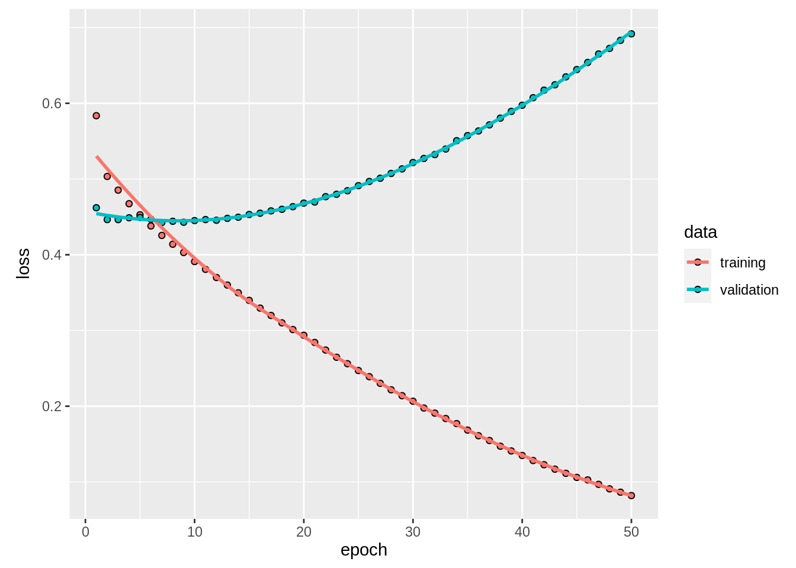
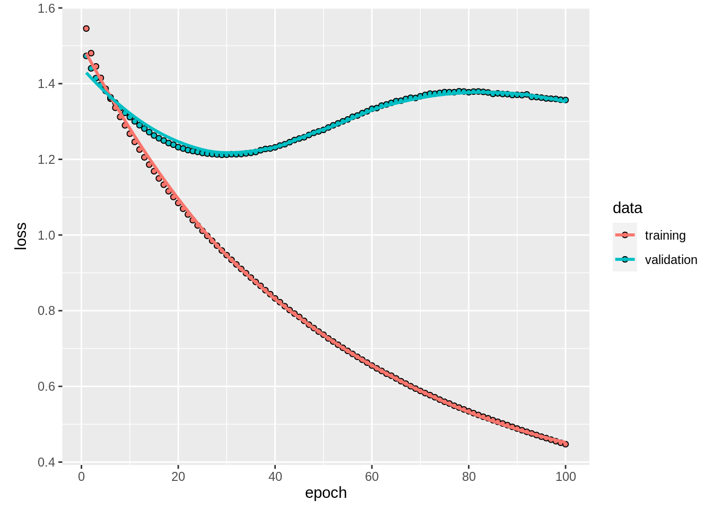
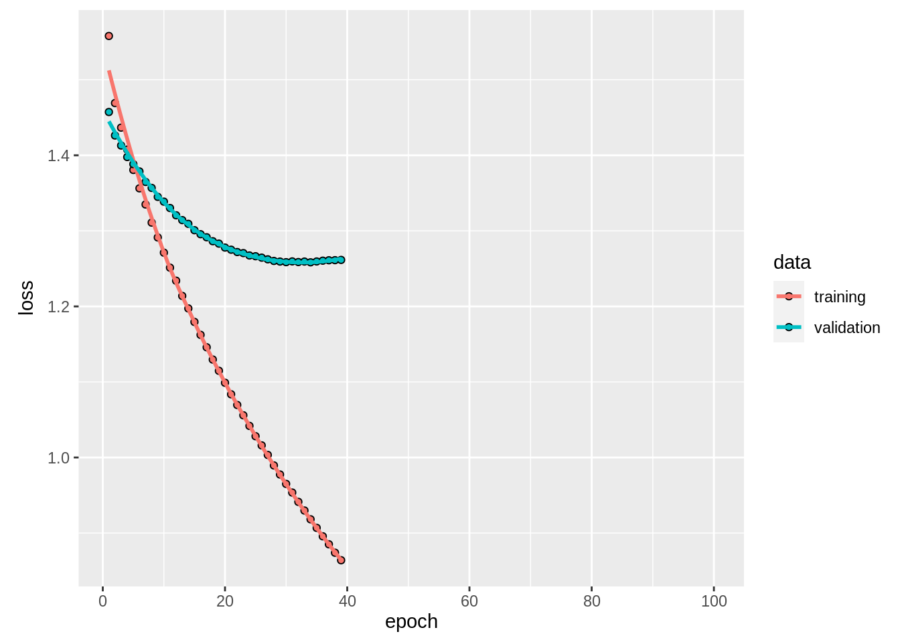

4 Deep learning
In this section, we will discuss both different (deep) network architectures and different means to regularize and improve those deep architectures.
4.1 Network architectures
4.1.1 Deep neural networks (DNNs)
Deep neural networks are basically the same as simple ANN, only that they have more hidden layers.
4.1.2 Convolutional neural networks (DNNs)
The main purpose of CNNs is image recognition. In a CNN, we have at least one convolution layer, additional to the normal, fully connected DNN layers.
Neurons in a convolution layer are connected only to a small spatially contiguous area of the input layer (receptive field). We use this structure (feature map) to scan the entire picture. The weights are optimized, but the same for all nodes of the hidden layer (shared weights). Think of the feature map as a kernel or filter that is used to scan the image.
We use this kernel to scan the input features / neurons (e.g. picture). The kernel weights are optimized, but we use the same weights across the entire input neurons (shared weights). The resulting hidden layer is called a feature map. You can think of the feature maps as a map that shows you where the “shapes” expressed by the kernel appear in the input. One kernel / feature map will not be enough, we typically have many shapes that we want to recognize. Thus, the input layer is typically connected to several feature maps, which can be aggregated and followed by a second layer of feature maps, and so on.
4.1.3 Recurrent neural networks (RNNs)
Recurrent Neural Networks are used to model sequential data, i.e. temporal sequence that exhibits temporal dynamic behavior. Here is a good introduction to the topic:
4.1.4 Natural language processing (NLP)
NLP is actually more of a task than a network structure, but in the area of deep learning for NLP, particular network structures are used. This video should get you an idea about what NLP is about
See also the blog post linked with the youtube video with accompanying code to the video. Moreover, here is an article that shows now NLP works with keras, however, written in Python. As a challenge, you can take the code and implement it in R https://nlpforhackers.io/keras-intro/
4.2 Case study: dropout and early stopping in a deep neural network
Regularization in deep neural networks is very important because the problem of overfitting. Standard regularization from statistics like l1 and l2 regularization are often feasy and require a lot of tuning. There are more stable and robust methods:
- Early stopping: Early stopping allows us to stop the training when for instance the test loss does not increase anymore
- Dropout: The Dropout layer randomly sets input units to 0 with a frequency of rate at each step during training time, which helps prevent overfitting. Dropout is more robust than l1 and l2, and tuning of the dropout rate can be beneficial but a rate between 0.2-0.5 works often quite well
Data preparation
See (mlr) for explanation about the pre-processing pipeline.
library(EcoData)
library(tidyverse)
library(mlr3)
library(mlr3pipelines)
data(nasa)
str(nasa)## 'data.frame': 4687 obs. of 40 variables:
## $ Neo.Reference.ID : int 3449084 3702322 3406893 NA 2363305 3017307 2438430 3653917 3519490 2066391 ...
## $ Name : int NA 3702322 3406893 3082923 2363305 3017307 2438430 3653917 3519490 NA ...
## $ Absolute.Magnitude : num 18.7 22.1 24.8 21.6 21.4 18.2 20 21 20.9 16.5 ...
## $ Est.Dia.in.KM.min. : num 0.4837 0.1011 0.0291 0.1272 0.1395 ...
## $ Est.Dia.in.KM.max. : num 1.0815 0.226 0.0652 0.2845 0.3119 ...
## $ Est.Dia.in.M.min. : num 483.7 NA 29.1 127.2 139.5 ...
## $ Est.Dia.in.M.max. : num 1081.5 226 65.2 284.5 311.9 ...
## $ Est.Dia.in.Miles.min. : num 0.3005 0.0628 NA 0.0791 0.0867 ...
## $ Est.Dia.in.Miles.max. : num 0.672 0.1404 0.0405 0.1768 0.1938 ...
## $ Est.Dia.in.Feet.min. : num 1586.9 331.5 95.6 417.4 457.7 ...
## $ Est.Dia.in.Feet.max. : num 3548 741 214 933 1023 ...
## $ Close.Approach.Date : Factor w/ 777 levels "1995-01-01","1995-01-08",..: 511 712 472 239 273 145 428 694 87 732 ...
## $ Epoch.Date.Close.Approach : num NA 1.42e+12 1.21e+12 1.00e+12 1.03e+12 ...
## $ Relative.Velocity.km.per.sec: num 11.22 13.57 5.75 13.84 4.61 ...
## $ Relative.Velocity.km.per.hr : num 40404 48867 20718 49821 16583 ...
## $ Miles.per.hour : num 25105 30364 12873 30957 10304 ...
## $ Miss.Dist..Astronomical. : num NA 0.0671 0.013 0.0583 0.0381 ...
## $ Miss.Dist..lunar. : num 112.7 26.1 NA 22.7 14.8 ...
## $ Miss.Dist..kilometers. : num 43348668 10030753 1949933 NA 5694558 ...
## $ Miss.Dist..miles. : num 26935614 6232821 1211632 5418692 3538434 ...
## $ Orbiting.Body : Factor w/ 1 level "Earth": 1 1 1 1 1 1 1 1 1 1 ...
## $ Orbit.ID : int NA 8 12 12 91 NA 24 NA NA 212 ...
## $ Orbit.Determination.Date : Factor w/ 2680 levels "2014-06-13 15:20:44",..: 69 NA 1377 1774 2275 2554 1919 731 1178 2520 ...
## $ Orbit.Uncertainity : int 0 8 6 0 0 0 1 1 1 0 ...
## $ Minimum.Orbit.Intersection : num NA 0.05594 0.00553 NA 0.0281 ...
## $ Jupiter.Tisserand.Invariant : num 5.58 3.61 4.44 5.5 NA ...
## $ Epoch.Osculation : num 2457800 2457010 NA 2458000 2458000 ...
## $ Eccentricity : num 0.276 0.57 0.344 0.255 0.22 ...
## $ Semi.Major.Axis : num 1.1 NA 1.52 1.11 1.24 ...
## $ Inclination : num 20.06 4.39 5.44 23.9 3.5 ...
## $ Asc.Node.Longitude : num 29.85 1.42 170.68 356.18 183.34 ...
## $ Orbital.Period : num 419 1040 682 427 503 ...
## $ Perihelion.Distance : num 0.794 0.864 0.994 0.828 0.965 ...
## $ Perihelion.Arg : num 41.8 359.3 350 268.2 179.2 ...
## $ Aphelion.Dist : num 1.4 3.15 2.04 1.39 1.51 ...
## $ Perihelion.Time : num 2457736 2456941 2457937 NA 2458070 ...
## $ Mean.Anomaly : num 55.1 NA NA 297.4 310.5 ...
## $ Mean.Motion : num 0.859 0.346 0.528 0.843 0.716 ...
## $ Equinox : Factor w/ 1 level "J2000": 1 1 NA 1 1 1 1 1 1 1 ...
## $ Hazardous : int 0 0 0 1 1 0 0 0 1 1 ...data = nasa %>% select(-Orbit.Determination.Date, -Close.Approach.Date, -Name, -Neo.Reference.ID)
data$Hazardous = as.factor(data$Hazardous)
task = TaskClassif$new(id = "nasa", backend = data, target = "Hazardous", positive = "1")
preprocessing = po("imputeoor") %>>% po("scale") %>>% po("encode")
data = preprocessing$train(task)[[1]]$data()
train = data[!is.na(data$Hazardous),]
submit = data[is.na(data$Hazardous),]
X = scale(train %>% select(-Hazardous))
Y = train %>% select(Hazardous)
Y = to_categorical(as.matrix(Y), 2)Early stopping
library(keras)
model = keras_model_sequential()
model %>%
layer_dense(units = 50L, activation = "relu", input_shape = ncol(X)) %>%
layer_dense(units = 50L, activation = "relu") %>%
layer_dense(units = 50L, activation = "relu") %>%
layer_dense(units = ncol(Y), activation = "softmax")
model %>%
compile(loss = loss_categorical_crossentropy, keras::optimizer_adamax(lr = 0.001))
summary(model)## Model: "sequential_5"
## ___________________________________________________________________________________________________________________________
## Layer (type) Output Shape Param #
## ===========================================================================================================================
## dense_14 (Dense) (None, 50) 1900
## ___________________________________________________________________________________________________________________________
## dense_15 (Dense) (None, 50) 2550
## ___________________________________________________________________________________________________________________________
## dense_16 (Dense) (None, 50) 2550
## ___________________________________________________________________________________________________________________________
## dense_17 (Dense) (None, 2) 102
## ===========================================================================================================================
## Total params: 7,102
## Trainable params: 7,102
## Non-trainable params: 0
## ___________________________________________________________________________________________________________________________model_history =
model %>%
fit(x = X, y = Y,
epochs = 50L, batch_size = 20L,
shuffle = TRUE, validation_split=0.4)
plot(model_history)## `geom_smooth()` using formula 'y ~ x'
The validation loss first decreases but then starts to increase again, can you explain this behavior? -> Overfitting!
Let’s try a l1+l2 regularization:
library(keras)
model = keras_model_sequential()
model %>%
layer_dense(units = 50L, activation = "relu", input_shape = ncol(X), kernel_regularizer = regularizer_l1_l2( 0.001, 0.001)) %>%
layer_dense(units = 50L, activation = "relu", kernel_regularizer = regularizer_l1_l2(0.001, 0.001)) %>%
layer_dense(units = 50L, activation = "relu", kernel_regularizer = regularizer_l1_l2(0.001, 0.001)) %>%
layer_dense(units = ncol(Y), activation = "softmax", kernel_regularizer = regularizer_l1_l2(0.001, 0.001))
model %>%
compile(loss = loss_categorical_crossentropy, keras::optimizer_adamax(lr = 0.001))
summary(model)## Model: "sequential_6"
## ___________________________________________________________________________________________________________________________
## Layer (type) Output Shape Param #
## ===========================================================================================================================
## dense_18 (Dense) (None, 50) 1900
## ___________________________________________________________________________________________________________________________
## dense_19 (Dense) (None, 50) 2550
## ___________________________________________________________________________________________________________________________
## dense_20 (Dense) (None, 50) 2550
## ___________________________________________________________________________________________________________________________
## dense_21 (Dense) (None, 2) 102
## ===========================================================================================================================
## Total params: 7,102
## Trainable params: 7,102
## Non-trainable params: 0
## ___________________________________________________________________________________________________________________________model_history =
model %>%
fit(x = X, y = Y,
epochs = 100L, batch_size = 20L,
shuffle = TRUE, validation_split=0.4)
plot(model_history)## `geom_smooth()` using formula 'y ~ x' Better, but the validation loss still starts to increase after 40 epochs. But we can use early stopping to end the training before the val loss starts to increase again!
library(keras)
model = keras_model_sequential()
model %>%
layer_dense(units = 50L, activation = "relu", input_shape = ncol(X), kernel_regularizer = regularizer_l1_l2( 0.001, 0.001)) %>%
layer_dense(units = 50L, activation = "relu", kernel_regularizer = regularizer_l1_l2(0.001, 0.001)) %>%
layer_dense(units = 50L, activation = "relu", kernel_regularizer = regularizer_l1_l2(0.001, 0.001)) %>%
layer_dense(units = ncol(Y), activation = "softmax", kernel_regularizer = regularizer_l1_l2(0.001, 0.001))
model %>%
compile(loss = loss_categorical_crossentropy, keras::optimizer_adamax(lr = 0.001))
summary(model)## Model: "sequential_7"
## ___________________________________________________________________________________________________________________________
## Layer (type) Output Shape Param #
## ===========================================================================================================================
## dense_22 (Dense) (None, 50) 1900
## ___________________________________________________________________________________________________________________________
## dense_23 (Dense) (None, 50) 2550
## ___________________________________________________________________________________________________________________________
## dense_24 (Dense) (None, 50) 2550
## ___________________________________________________________________________________________________________________________
## dense_25 (Dense) (None, 2) 102
## ===========================================================================================================================
## Total params: 7,102
## Trainable params: 7,102
## Non-trainable params: 0
## ___________________________________________________________________________________________________________________________early = keras::callback_early_stopping(patience = 5L)
model_history =
model %>%
fit(x = X, y = Y,
epochs = 100L, batch_size = 20L,
shuffle = TRUE, validation_split=0.4, callbacks=c(early))
plot(model_history)## `geom_smooth()` using formula 'y ~ x' Patience is the number of epochs to wait before aborting the training.
Dropout - another type of regularization
Srivastava et al. (2014) suggests a dropout rate of 50% for internal hidden layers and 20% for the input layer. One advantage of dropout is that the training is more independent of the number of epochs i.e. the val loss usually doesn’t start to increase after several epochs.
model = keras_model_sequential()
model %>%
layer_dropout(0.2) %>%
layer_dense(units = 50L, activation = "relu", input_shape = ncol(X)) %>%
layer_dropout(0.5) %>%
layer_dense(units = 50L, activation = "relu") %>%
layer_dropout(0.5) %>%
layer_dense(units = 50L, activation = "relu") %>%
layer_dropout(0.5) %>%
layer_dense(units = ncol(Y), activation = "softmax")
model %>%
compile(loss = loss_categorical_crossentropy, keras::optimizer_adamax(lr = 0.001))
model_history =
model %>%
fit(x = X, y = Y,
epochs = 100L, batch_size = 20L,
shuffle = TRUE, validation_split=0.4)
plot(model_history)## `geom_smooth()` using formula 'y ~ x'Ofc, you can still combine early stopping and dropout, which is normally a good idea since it improves training efficiency (e.g. you could start with 1000 epochs and you know training will be aborted if it doesn’t improve anymore).
torch
Dropout and early stopping with torch:
model_torch = nn_sequential(
nn_dropout(0.2),
nn_linear(ncol(X), 50L),
nn_relu(),
nn_dropout(0.5),
nn_linear(50L, 50L),
nn_relu(),
nn_dropout(0.5),
nn_linear(50L, 50L),
nn_relu(),
nn_dropout(0.5),
nn_linear(50L, 2L)
)
YT = apply(Y, 1,which.max)
dataset_nasa = dataset(
name = "nasa",
initialize = function(nasa) {
self$X = nasa$X
self$Y = nasa$Y
},
.getitem = function(i) {
X = self$X[i,,drop=FALSE] %>% torch_tensor()
Y = self$Y[i] %>% torch_tensor()
list(X, Y)
},
.length = function() {
nrow(self$X)
})
train_dl = dataloader(dataset_nasa(list(X = X[1:400,], Y = YT[1:400])),
batch_size = 32, shuffle = TRUE)
test_dl = dataloader( dataset_nasa(list(X = X[101:500,], Y = YT[101:500])),
batch_size = 32)
model_torch$train()
opt = optim_adam(model_torch$parameters, 0.01)
train_losses = c()
test_losses = c()
early_epoch = 0
min_loss = Inf
patience = 5
for(epoch in 1:50) {
if(early_epoch >= patience) break
train_loss = c()
test_loss = c()
coro::loop(for (batch in train_dl) {
opt$zero_grad()
pred = model_torch(batch[[1]]$squeeze())
loss = nnf_cross_entropy(pred, batch[[2]]$squeeze(),reduction = "mean")
loss$backward()
opt$step()
train_loss = c(train_loss, loss$item())
})
coro::loop(for (batch in test_dl) {
pred = model_torch(batch[[1]]$squeeze())
loss = nnf_cross_entropy(pred, batch[[2]]$squeeze(),reduction = "mean")
test_loss = c(test_loss, loss$item())
})
### early stopping ###
if(mean(test_loss) < min_loss) {
min_loss = mean(test_loss)
early_epoch = 0
} else {
early_epoch = early_epoch + 1
}
###
train_losses = c(train_losses, mean(train_loss))
test_losses = c(test_losses, mean(test_loss))
cat(sprintf("Loss at epoch %d: %3f\n", epoch, mean(train_loss)))
}## Loss at epoch 1: 0.518420
## Loss at epoch 2: 0.455640
## Loss at epoch 3: 0.446879
## Loss at epoch 4: 0.447216
## Loss at epoch 5: 0.425368
## Loss at epoch 6: 0.425635
## Loss at epoch 7: 0.414827
## Loss at epoch 8: 0.401890
## Loss at epoch 9: 0.386621
## Loss at epoch 10: 0.391964
## Loss at epoch 11: 0.390527
## Loss at epoch 12: 0.389494
## Loss at epoch 13: 0.396623
## Loss at epoch 14: 0.396054
## Loss at epoch 15: 0.361036
## Loss at epoch 16: 0.354566matplot(cbind(train_losses, test_losses), type = "o", pch = c(15, 16), col = c("darkblue", "darkred"), lty = 1, xlab = "Epoch", ylab = "Loss", las = 1)
legend("topright", bty = "n", col = c("darkblue", "darkred"), lty = 1, pch = c(15, 16), legend = c("Train loss", "Val loss") )4.3 Case study - fitting a Convolutional Neural Networks on MNIST
We will show the use of convolutinal neural networks with the MNIST dataset.The MNIST dataset is maybe one of the most famous image datasets. It is a dataset of 60,000 handwritten digits from 0-9.
To do so, we define a few helper functions:
library(keras)
rotate = function(x) t(apply(x, 2, rev))
imgPlot = function(img, title = ""){
col=grey.colors(255)
image(rotate(img), col = col, xlab = "", ylab = "", axes=FALSE, main = paste0("Label: ", as.character(title)))
}The dataset is so famous that there is an automatic download function in keras:
data = dataset_mnist()
train = data$train
test = data$testLet’s visualize a few digits:
par(mfrow = c(1,3))
.n = sapply(1:3, function(x) imgPlot(train$x[x,,], train$y[x]))
Similar to the normal ML workflow, we have to scale the pixels (from 0-255) to the range of [0,1] and one hot encode the response. To scale the pixels, we will use arrays instead of matrices. Arrays are called tensors in mathematics and a 2d array/tensor is typically called a matrix.
train_x = array(train$x/255, c(dim(train$x), 1))
test_x = array(test$x/255, c(dim(test$x), 1))
train_y = to_categorical(train$y, 10)
test_y = to_categorical(test$y, 10)The last dimension stands for the number of channels in the image. In our case we have only one channel because the images are white-black.
Normally we would have three channels - colors are encoded by the combination of three base colors (usually red,green,blue).
To build our convolutional model, we have to specify a kernel. In our case, we will use 16 convolutional kernels (filters) of size 2x2. These are 2D kernels because our images are 2D. For movies for example, one would use a 3D kernel (the third dimension would correspond to time and not to the color channels).
model = keras_model_sequential()
model %>%
layer_conv_2d(input_shape = c(28L, 28L,1L),filters = 16L, kernel_size = c(2L,2L), activation = "relu") %>%
layer_max_pooling_2d() %>%
layer_conv_2d(filters = 16L, kernel_size = c(3L,3L), activation = "relu") %>%
layer_max_pooling_2d() %>%
layer_flatten() %>%
layer_dense(100L, activation = "relu") %>%
layer_dense(10L, activation = "softmax")
summary(model)## Model: "sequential_9"
## ___________________________________________________________________________________________________________________________
## Layer (type) Output Shape Param #
## ===========================================================================================================================
## conv2d (Conv2D) (None, 27, 27, 16) 80
## ___________________________________________________________________________________________________________________________
## max_pooling2d (MaxPooling2D) (None, 13, 13, 16) 0
## ___________________________________________________________________________________________________________________________
## conv2d_1 (Conv2D) (None, 11, 11, 16) 2320
## ___________________________________________________________________________________________________________________________
## max_pooling2d_1 (MaxPooling2D) (None, 5, 5, 16) 0
## ___________________________________________________________________________________________________________________________
## flatten (Flatten) (None, 400) 0
## ___________________________________________________________________________________________________________________________
## dense_30 (Dense) (None, 100) 40100
## ___________________________________________________________________________________________________________________________
## dense_31 (Dense) (None, 10) 1010
## ===========================================================================================================================
## Total params: 43,510
## Trainable params: 43,510
## Non-trainable params: 0
## ___________________________________________________________________________________________________________________________We additionally used a pooling layer to downsize the resulting feature maps. After another convolutional and pooling layer we flatten the output, i.e. the following dense layer treats the previous layer as a full layer (so the dense layer is connected to all weights from the last feature maps).Having flattened the layer, we can simply use our typical output layer.
torch
Prepare/download data:
library(torch)
library(torchvision)
train_ds = mnist_dataset(
".",
download = TRUE,
train = TRUE,
transform = transform_to_tensor
)
test_ds = mnist_dataset(
".",
download = TRUE,
train = FALSE,
transform = transform_to_tensor
)Build dataloader:
train_dl = dataloader(train_ds, batch_size = 32, shuffle = TRUE)
test_dl = dataloader(test_ds, batch_size = 32)
first_batch = train_dl$.iter()
df = first_batch$.next()
df$x$size()## [1] 32 1 28 28Build CNN: We have here to calculate the shapes of our layers on our own:
We start with our input of shape (batch_size, 1, 28, 28)
sample = df$x
sample$size()## [1] 32 1 28 28first conv layer has shape (input channel = 1, number of feature maps = 16, kernel size = 2)
conv1 = nn_conv2d(1, 16L, 2L, stride = 1L)
(sample %>% conv1)$size()## [1] 32 16 27 27Output: batch_size = 32, number of feature maps = 16, dimensions of each feature map = ( 27 , 27 ) Wit a kernel size of two and stride =1 we wil lose one pixel in each dimension… Questions:
- what does happen if we increase the stride?
- what does happen if we increase the kernel size?
pooling layer summarizes each feature map
(sample %>% conv1 %>% nnf_max_pool2d(kernel_size = 2L,stride = 2L))$size()## [1] 32 16 13 13kernel_size = 2L and stride = 2L halfs the pixel dimensions of our image
fully connected layer
Now we have to flatten our final output of the CNN model to use a normal fully connected layer, but to do so we have to calulate the number of inputs for the fully connected layer:
dims = (sample %>% conv1 %>% nnf_max_pool2d(kernel_size = 2L,stride = 2L))$size()
# without the batch size ofc
final = prod(dims[-1])
print(final)## [1] 2704fc = nn_linear(final, 10L)
(sample %>% conv1 %>% nnf_max_pool2d(kernel_size = 2L,stride = 2L) %>% torch_flatten(start_dim = 2L) %>% fc)$size()## [1] 32 10Build the network:
net <- nn_module(
"mnist",
initialize = function() {
self$conv1 <- nn_conv2d(1, 16L, 2L)
self$conv2 <- nn_conv2d(16L, 16L, 3)
self$fc1 <- nn_linear(400L, 100L)
self$fc2 <- nn_linear(100L, 10L)
},
forward = function(x) {
x %>%
self$conv1() %>%
nnf_relu() %>%
nnf_max_pool2d(2) %>%
self$conv2() %>%
nnf_relu() %>%
nnf_max_pool2d(2) %>%
torch_flatten(start_dim = 2) %>%
self$fc1() %>%
nnf_relu() %>%
self$fc2()
}
)The rest is as usual: First we compile the model.
model %>%
compile(
optimizer = keras::optimizer_adamax(0.01),
loss = loss_categorical_crossentropy
)
summary(model)## Model: "sequential_9"
## ___________________________________________________________________________________________________________________________
## Layer (type) Output Shape Param #
## ===========================================================================================================================
## conv2d (Conv2D) (None, 27, 27, 16) 80
## ___________________________________________________________________________________________________________________________
## max_pooling2d (MaxPooling2D) (None, 13, 13, 16) 0
## ___________________________________________________________________________________________________________________________
## conv2d_1 (Conv2D) (None, 11, 11, 16) 2320
## ___________________________________________________________________________________________________________________________
## max_pooling2d_1 (MaxPooling2D) (None, 5, 5, 16) 0
## ___________________________________________________________________________________________________________________________
## flatten (Flatten) (None, 400) 0
## ___________________________________________________________________________________________________________________________
## dense_30 (Dense) (None, 100) 40100
## ___________________________________________________________________________________________________________________________
## dense_31 (Dense) (None, 10) 1010
## ===========================================================================================================================
## Total params: 43,510
## Trainable params: 43,510
## Non-trainable params: 0
## ___________________________________________________________________________________________________________________________Then, we train the model:
epochs = 5L
batch_size = 32L
model %>%
fit(
x = train_x,
y = train_y,
epochs = epochs,
batch_size = batch_size,
shuffle = TRUE,
validation_split = 0.2
)torch
Train model:
model_torch = net()
opt = optim_adam(params = model_torch$parameters, lr = 0.01)
for(e in 1:3) {
losses = c()
coro::loop(for (batch in train_dl) {
opt$zero_grad()
pred = model_torch(batch[[1]])
loss = nnf_cross_entropy(pred, batch[[2]], reduction = "mean")
loss$backward()
opt$step()
losses = c(losses, loss$item())
})
cat(sprintf("Loss at epoch %d: %3f\n", e, mean(losses)))
}## Loss at epoch 1: 0.250743
## Loss at epoch 2: 0.146959
## Loss at epoch 3: 0.130747Evaluation:
model_torch$eval()
test_losses = c()
total = 0
correct = 0
coro::loop(for (b in test_dl) {
output = model_torch(b[[1]])
labels = b[[2]]
loss = nnf_cross_entropy(output, labels)
test_losses = c(test_losses, loss$item())
predicted = torch_max(output$data(), dim = 2)[[2]]
total = total + labels$size(1)
correct = correct + (predicted == labels)$sum()$item()
})
mean(test_losses)## [1] 0.1116432test_accuracy <- correct/total
test_accuracy## [1] 0.96494.4 Advanced training techniques
4.4.1 Data Augmentation
Having to train a CNN using very little data is a common problem. Data augmentation helps to artificially increase the number of images.
The idea is that a CNN learns specific structures such as edges from images. Rotating, adding noise, and zooming in and out will preserve the overall key structure we are interested in, but the model will see new images and has to search once again for the key structures.
Luckily, it is very easy to use data augmentation in keras.
To show this, we will use again the MNIST dataset. We have to define a generator object (it is a specific object which infinitly draws samples from our dataset). In the generator we can turn on the data augementation. However, now we have to set the step size (steps_per_epoch) because the model does not know the first dimension of the image.
data = EcoData::dataset_flower()
train = data$train
test = data$test
labels = data$labels
model = keras_model_sequential()
model %>%
layer_conv_2d(filter = 16L, kernel_size = c(5L, 5L), input_shape = c(80L, 80L, 3L), activation = "relu") %>%
layer_max_pooling_2d() %>%
layer_conv_2d(filter = 32L, kernel_size = c(3L, 3L), activation = "relu") %>%
layer_max_pooling_2d() %>%
layer_conv_2d(filter = 64L, kernel_size = c(3L, 3L), strides = c(2L, 2L), activation = "relu") %>%
layer_max_pooling_2d() %>%
layer_flatten() %>%
layer_dropout(0.5) %>%
layer_dense(units = 5L, activation = "softmax")
# Data augmentation
aug = image_data_generator(rotation_range = 90,
zoom_range = c(0.3),
horizontal_flip = TRUE,
vertical_flip = TRUE)
# Data preparation / splitting
indices = sample.int(nrow(train), 0.1*nrow(train))
generator = flow_images_from_data(train[-indices,,,]/255, k_one_hot(labels[-indices], num_classes = 5L),
generator = aug, batch_size = 25L, shuffle = TRUE)
test = train[indices,,,]/255
test_labels = k_one_hot(labels[indices], num_classes = 5L)
# Our own training loop with early stopping:
epochs = 50L
batch_size = 25L
steps = floor(dim(train)[1]/batch_size)
optim = keras::optimizer_rmsprop()
max_patience = 5L
patience = 1L
min_val_loss = Inf
val_losses = c()
epoch_losses = c()
for(e in 1:epochs) {
epoch_loss = c()
for(s in 1:steps) {
batch = reticulate::iter_next(generator)
with(tf$GradientTape() %as% tape, {
pred = model(batch[[1]], training = TRUE)
loss = keras::loss_categorical_crossentropy(batch[[2]], pred)
loss = tf$reduce_mean(loss)
})
gradients = tape$gradient(target = loss, sources = model$trainable_variables)
optim$apply_gradients(purrr::transpose(list(gradients, model$trainable_variables)))
epoch_loss = c(epoch_loss, loss$numpy())
}
epoch_losses = c(epoch_losses, epoch_loss)
## test loss ##
preds = model %>% predict(test)
val_losses = c(val_losses, tf$reduce_mean( keras::loss_categorical_crossentropy(test_labels, preds) )$numpy())
cat("Epoch: ", e, " Train Loss: ", mean(epoch_losses)," Val Loss: ", val_losses[e], " \n")
if(val_losses[e] < min_val_loss) {
min_val_loss = val_losses[e]
patience = 1
} else { patience = patience+1 }
if(patience == max_patience) break
}
preds = predict(model, data$test/255)
preds = apply(preds, 1, which.max)-1So using data augmentation we can artificially increase the number of images.
torch
In torch, we have to change the transform function (but only for the train dataloader):
train_transforms <- function(img) {
img %>%
transform_to_tensor() %>%
transform_random_horizontal_flip(p = 0.3) %>%
transform_random_resized_crop(size = c(28L, 28L)) %>%
transform_random_vertical_flip(0.3)
}
train_ds = mnist_dataset(".", download = TRUE, train = TRUE, transform = train_transforms)
test_ds = mnist_dataset(".", download = TRUE, train = FALSE,transform = transform_to_tensor)
train_dl = dataloader(train_ds, batch_size = 100L, shuffle = TRUE)
test_dl = dataloader(test_ds, batch_size = 100L)
model_torch = net()
opt = optim_adam(params = model_torch$parameters, lr = 0.01)
for(e in 1:1) {
losses = c()
coro::loop(for (batch in train_dl) {
opt$zero_grad()
pred = model_torch(batch[[1]])
loss = nnf_cross_entropy(pred, batch[[2]], reduction = "mean")
loss$backward()
opt$step()
losses = c(losses, loss$item())
})
cat(sprintf("Loss at epoch %d: %3f\n", e, mean(losses)))
}## Loss at epoch 1: 1.440276model_torch$eval()
test_losses = c()
total = 0
correct = 0
coro::loop(for (b in test_dl) {
output = model_torch(b[[1]])
labels = b[[2]]
loss = nnf_cross_entropy(output, labels)
test_losses = c(test_losses, loss$item())
predicted = torch_max(output$data(), dim = 2)[[2]]
total = total + labels$size(1)
correct = correct + (predicted == labels)$sum()$item()
})
test_accuracy <- correct/total
print(test_accuracy)## [1] 0.90844.4.2 Transfer learning
Another approach to reduce the necessary number of images or to speed up convergence of the models is the use of transfer learning.
The main idea of transfer learning is that all the convolutional layers have mainly one task - learning to identify highly correlated neighbored features and therefore these learn structures such as edges in the image and only the top layer, the dense layer is the actual classifier of the CNN. Thus, one could think that we could only train the top layer as classifier. To do so, it will be confronted by sets of different edges/structures and has to decide the label based on these.
Again, this sounds very complicating but is again quite easy with keras:
We will do this now with the CIFAR10 data set, so we have to prepare the data:
data = keras::dataset_cifar10()
train = data$train
test = data$test
image = train$x[5,,,]
image %>%
image_to_array() %>%
`/`(., 255) %>%
as.raster() %>%
plot()
train_x = array(train$x/255, c(dim(train$x)))
test_x = array(test$x/255, c(dim(test$x)))
train_y = to_categorical(train$y, 10)
test_y = to_categorical(test$y, 10)Keras provides download functions for all famous architectures/CNN models which are already trained on the imagenet dataset (another famous dataset). These trained networks come already without their top layer, so we have to set include_top to false and change the input shape.
densenet = application_densenet201(include_top = FALSE, input_shape = c(32L, 32L, 3L))Now, we will use not a sequential model but just a “keras_model” where we can specify the inputs and outputs. Thereby, the outputs are our own top layer, but the inputs are the densenet inputs, as these are already pre-trained.
model = keras::keras_model(inputs = densenet$input, outputs =
layer_flatten(layer_dense(densenet$output, units = 10L, activation = "softmax"))
)In the next step we want to freeze all layers except for our own last layer (with freezing I mean that these are not trained: we do not want to train the complete model, we only want to train the last layer). You can check the number of trainable weights via summary(model)
model %>% freeze_weights(to = length(model$layers)-1)
summary(model)And then the usual training:
model %>%
compile(loss = loss_categorical_crossentropy, optimizer = optimizer_adamax())
model %>%
fit(
x = train_x,
y = train_y,
epochs = 1L,
batch_size = 32L,
shuffle = T,
validation_split = 0.2,
)We have seen, that transfer-learning can easily be done using keras.
torch
In torch, we have to change the transform function (but only for the train dataloader):
library(torchvision)
train_ds = cifar10_dataset(".", download = TRUE, train = TRUE, transform = transform_to_tensor)
test_ds = cifar10_dataset(".", download = TRUE, train = FALSE,transform = transform_to_tensor)
train_dl = dataloader(train_ds, batch_size = 100L, shuffle = TRUE)
test_dl = dataloader(test_ds, batch_size = 100L)
model_torch = model_resnet18(pretrained = TRUE)
# we will set all model parameters to constant values:
model_torch$parameters %>% purrr::walk(function(param) param$requires_grad_(FALSE))
# let's replace the last layer (last layer is named 'fc') with our own layer:
inFeat = model_torch$fc$in_features
model_torch$fc = nn_linear(inFeat, out_features = 10L)
opt = optim_adam(params = model_torch$parameters, lr = 0.01)
for(e in 1:1) {
losses = c()
coro::loop(for (batch in train_dl) {
opt$zero_grad()
pred = model_torch(batch[[1]])
loss = nnf_cross_entropy(pred, batch[[2]], reduction = "mean")
loss$backward()
opt$step()
losses = c(losses, loss$item())
})
cat(sprintf("Loss at epoch %d: %3f\n", e, mean(losses)))
}## Loss at epoch 1: 2.019492model_torch$eval()
test_losses = c()
total = 0
correct = 0
coro::loop(for (b in test_dl) {
output = model_torch(b[[1]])
labels = b[[2]]
loss = nnf_cross_entropy(output, labels)
test_losses = c(test_losses, loss$item())
predicted = torch_max(output$data(), dim = 2)[[2]]
total = total + labels$size(1)
correct = correct + (predicted == labels)$sum()$item()
})
test_accuracy <- correct/total
print(test_accuracy)## [1] 0.3893Flower dataset
Let’s do it with our flower dataset:
data = EcoData::dataset_flower()
train = data$train
test = data$test
labels = data$labels
library(keras)
library(tensorflow)
densenet = keras::application_densenet201(include_top = FALSE, input_shape = list(80L, 80L, 3L))
keras::freeze_weights(densenet)
model = keras_model(inputs = densenet$input,
outputs = densenet$output %>%
layer_flatten() %>%
layer_dropout(0.2) %>%
layer_dense(units = 200L) %>%
layer_dropout(0.2) %>%
layer_dense(units = 5L, activation="softmax"))
# Data augmentation
aug = image_data_generator(rotation_range = 180,zoom_range = 0.4,width_shift_range = 0.2, height_shift_range = 0.2, vertical_flip = TRUE, horizontal_flip = TRUE,preprocessing_function = imagenet_preprocess_input)
# Data preparation / splitting
indices = sample.int(nrow(train), 0.1*nrow(train))
generator = flow_images_from_data(train[-indices,,,], k_one_hot(labels[-indices], num_classes = 5L),
batch_size = 25L, shuffle = TRUE, generator = aug)
test = imagenet_preprocess_input(train[indices,,,])
test_labels = k_one_hot(labels[indices], num_classes = 5L)
# Our own training loop with early stopping:
epochs = 1L
batch_size = 45L
steps = floor(dim(train)[1]/batch_size)
optim = keras::optimizer_rmsprop(lr = 0.0005)
max_patience = 10L
patience = 1L
min_val_loss = Inf
val_losses = c()
epoch_losses = c()
for(e in 1:epochs) {
epoch_loss = c()
for(s in 1:steps) {
batch = reticulate::iter_next(generator)
with(tf$GradientTape() %as% tape, {
pred = model(batch[[1]], training = TRUE)
loss = keras::loss_categorical_crossentropy(batch[[2]], pred)
loss = tf$reduce_mean(loss)
})
gradients = tape$gradient(target = loss, sources = model$trainable_variables)
optim$apply_gradients(purrr::transpose(list(gradients, model$trainable_variables)))
epoch_loss = c(epoch_loss, loss$numpy())
}
epoch_losses = c(epoch_losses, epoch_loss)
## test loss ##
preds = model %>% predict(test)
val_losses = c(val_losses, tf$reduce_mean( keras::loss_categorical_crossentropy(test_labels, preds) )$numpy())
cat("Epoch: ", e, " Train Loss: ", mean(epoch_losses)," Val Loss: ", val_losses[e], " \n")
if(val_losses[e] < min_val_loss) {
min_val_loss = val_losses[e]
patience = 1
} else { patience = patience+1 }
if(patience == max_patience) break
}
preds = predict(model, imagenet_preprocess_input(data$test))